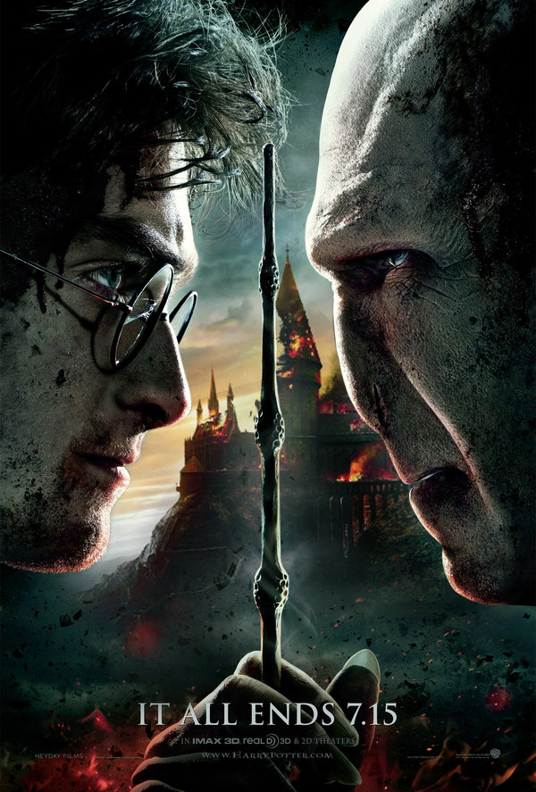

Harry potter was only a baby when his parents were killed. When they were murdered by Lord Voldemort, Harry was victim of an attempted murder by the Dark Lord and because of that he recieved a lightning bolt scar on the right side of his forehead. After that happened he was then transported to his aunts house to be taken care of but really ends up becoming their slave and does whatever they tell him to or they will end up punishing him for not doing what they tell him to. One day however, on his cousin Dudley's birthday they all go to the zoo and Harry realizes not only can he talk to snakes but he can do magic. Later a lot of letters come to harrys hpouse and he has been invited to Hogwarts chool of Witchcraft and Wizadry. The uncle however doesnt want Harry to go so he keeps throwing the letters away and they move houses. Then later on that midnight someone knocks down the door and its a half giant half man named Hagred. Turns out he was there to take Harry to the train station that takes them to Hogwarts. After making a few stops for supplies and gold withdrawls they go to the train station. After Harry goes to the train he gets a visit from a kid named Ron Weasley. Later that day a girl named Hermione Granger goes to their area and fixes Harry's glasses and she recomends them to put on their robes. during the whole year at Hogwarts Harry, Hermione, and Ron become best friends and go throughout a lot of adventures that sometimes test all of their frienships but will eventually lead to the final fight to the death with Voldemort.
